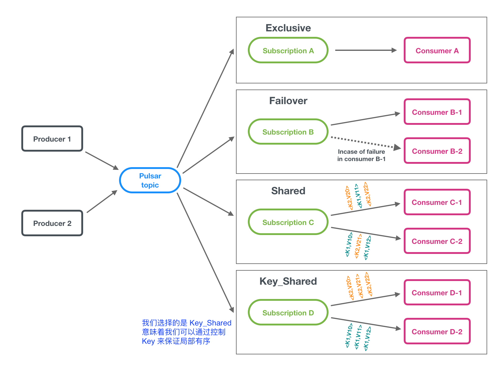
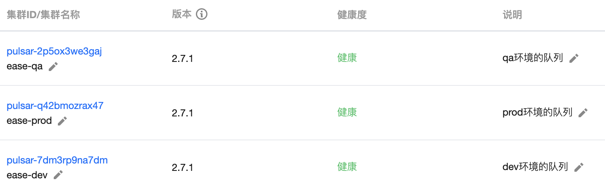
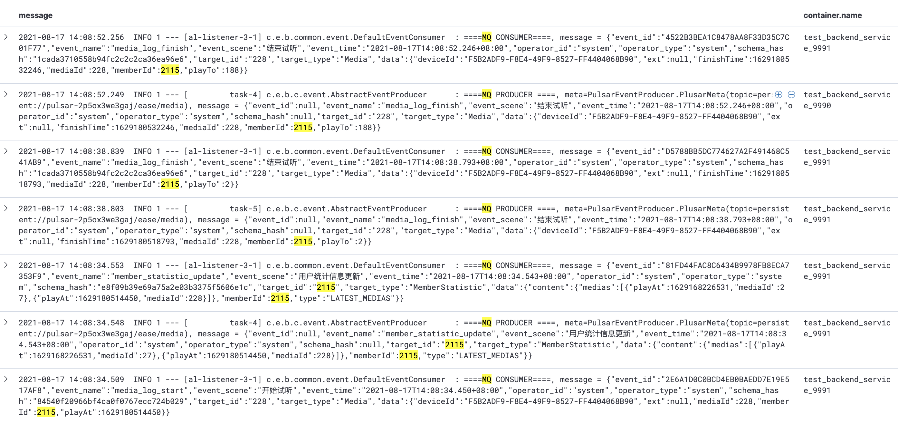
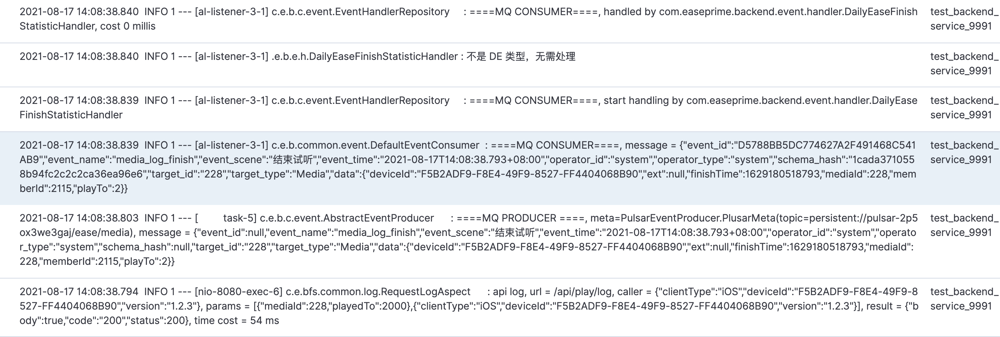

..
pulsar 队列实践
Architecture
架构

消息订阅方式

消息的生命周期
graph LR;
produce(生产数据)
consumer(被不同的消费者, 并进行 ACK);
expire(过期 和 清理);
produce-->consumer-->expire
更多消息相关, 见 这里
Event 和 元数据
Event 治理
在 Ease 的后端服务中, 我们是通过 common-lib 包进行封装和处理的
该部分的组织形式如下
graph LR;
subgraph 消费者
eventConsumer(eventConsumer);
h1(handler1);
h2(handler2);
event2("onEvent(event)")
eventConsumer-->h1 & h2 --> event2
end
subgraph 生产者
eventProducer(eventProducer);
pulsar1(Topic: pulsar-media);
event1(SendEvent)
eventProducer-->pulsar1-->event1
end
subgraph 事件定义
event(event)
payload(payload)
eventType(eventType);
eventCode(eventCode);
desc(desc);
event-->eventType & payload
eventType-->eventCode & desc;
end
当用户完成一个音频的播放时候的操作
graph LR;
subgraph 消费者
eventConsumer(eventConsumer);
h1(DE完播计算 handler);
h2(用户播放数据缓存刷新 handler);
h3(XXX Handler);
eventConsumer-->h1 & h2 & h3
end
subgraph 生产者
eventProducer(eventProducer);
pulsar1(Topic: media);
event1(发送事件: MEDIA_LOG_FINISH)
eventProducer-->pulsar1-->event1
end
subgraph 音频播放完成事件
event(event)
payload(MediaLogFinishPayload)
payload1(mediaId)
payload2(memberId)
payload3(playTo)
eventType(MEDIA_LOG_FINISH);
event-->eventType & payload
payload --> payload1 & payload2 & payload3
end
元数据
-
orderingKey
这里支持传 orderingKey, 用来作为 有序消费。我们经常的场景是: 同一个用户id 的某种类型数据，希望可以有序地消费
比如用户的统计数据, 如果是队列本身可以保证有序, 则大概率是有序的, 可以避免过多的数据库的锁竞争问题
-
消费次数和消息丢失的问题
pulsar 理论上是
at-least-once semantics, 一些重要的业务需要自己能保证是可重复执行的更多内容见 concepts-messaging
-
事件和事务的问题
有时候会因为业务本身的复杂性, 在很多个业务逻辑的 上下文，都会发送对应的事件
@Transactional void doSth() { // ① 更新用户信息 updateMember sendMemberUpdateEvent // ② 更新Vip状态 updateMemberVip sendMemberVipUpdateEvent // ③ 记录日志 updateMemberVipLog }如果上面在 ③ 记录日志的时候报错了，那么会导致 ① 和 ② 回滚, 此时事件理论上被发出去了, 会导致其他的业务逻辑的问题。
故这里发送事件的逻辑专门进行了处理。注意
所有的事件，都是在 事务提交 之后，才会进行发送。
代码实现逻辑见这里
部署方式

如何跟踪和查询
方式1: 根据用户id 或者 deviceId 进行查询

方式2: 查看用户的消费 上下文
